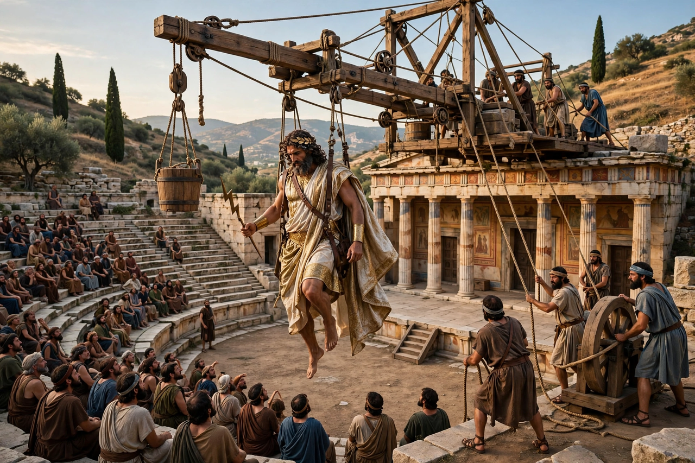

Deus ex machina (Latin: "god from the machine") is a plot device whereby an unsolvable problem in a story is suddenly resolved by an unexpected and unlikely intervention. The phrase derives from ancient Greek theatre, in which a god was lowered onto the stage by a crane — the mechane — to settle the action. In modern criticism the term is usually pejorative, describing resolutions that feel contrived or unearned, though defences of the device exist.
| Deus ex machina | |
|---|---|
| Literally | "God from the machine" (Latin) |
| Origin | Ancient Greek tragedy, esp. Euripides |
| Device | The mechane (stage crane) |
Aeschylus and Sophocles used the crane sparingly, but Euripides made the descending god a signature closing device: nearly half of his surviving plays, including Medea, Hippolytus, Electra, Iphigenia in Tauris and Orestes, end with a deity appearing above the skene to announce the future and impose order. Aristotle criticised the practice in the Poetics, arguing that the resolution of a plot should arise from the plot itself rather than from a machine, "as in the Medea".
The term now applies to any artful dodge: a rescue, inheritance, invention or character introduced without preparation to resolve a narrative impasse. Writers and critics debate whether deliberate or mythic uses — from the eagles in The Lord of the Rings to endings that thematise providence itself — escape the criticism. The device persists in popular usage as shorthand for an author rescuing characters by fiat.
See also: Plot device · Ancient Greek theatre